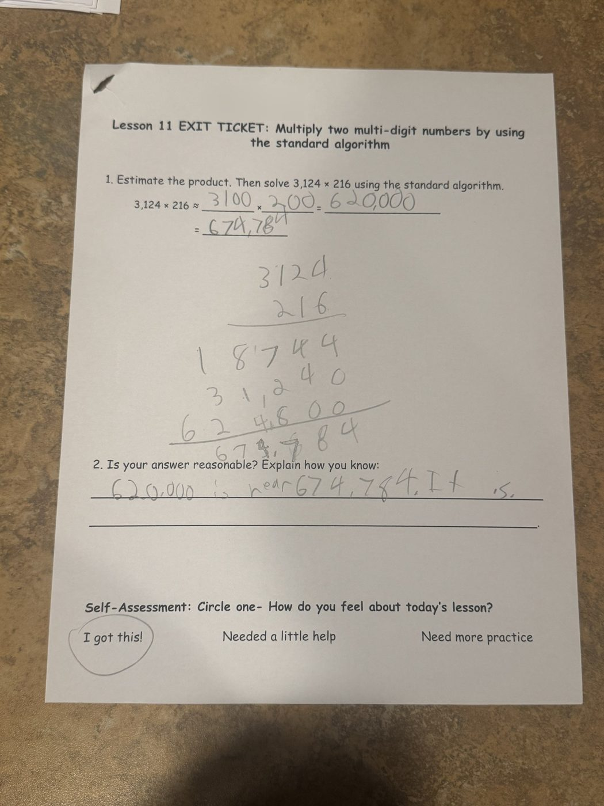
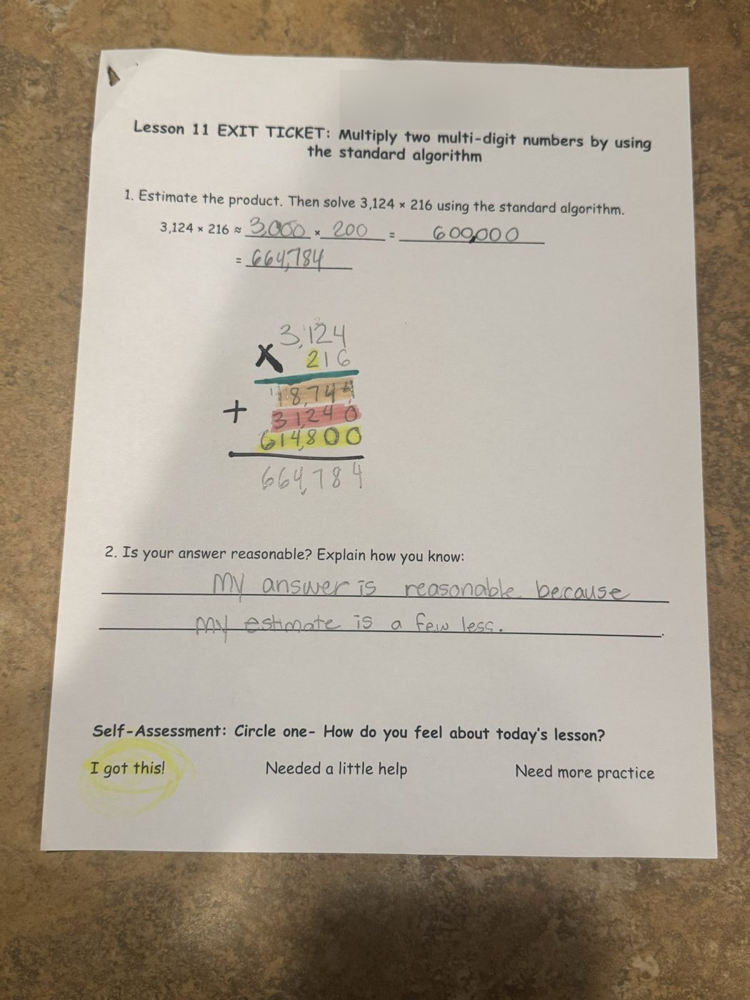

II · 3 Teaching Artifacts & Reflections
Student Work Samples
exit tickets from my multiplication lesson

Estimates 3,100 × 200 = 620,000, correctly solves 3,124 × 216 = 674,784 with the standard algorithm, and uses the estimate to explain why the answer is reasonable.

Color-codes each partial product to keep place value organized. A slip in the third partial product (614,800 instead of 624,800) gives 664,784, exactly the kind of error an exit ticket surfaces so it can be retaught in a small group.
Both students circled “I got this!” on the self-assessment, a reminder of why I pair self-assessment with the work itself. See the math lesson plan. Student names have been removed.